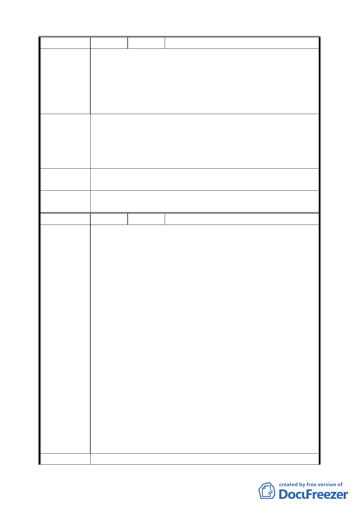

編
號２
陳情人 臺北市北投區新民自辦市地重劃區籌備會
建議位置：新民自辦市地重劃區
建議理由：查原計畫道路用地之所有權均為本重劃區內之私
陳情理由
有土地，該土地面積全部列入本重劃區內面積計算，俟
重劃完成後，全區內道路等公共設施將全部無償辦理所
有權移轉登記予 貴府所有，可為貴府節省一筆可觀之
徵收、建設等相關費用。
政八之珠海路底連接泉源路段在本會市地重劃範圍內，乃重
劃區出入口之重要道路，不能廢除，有關東北角道路坡度過
建 議 辦 法 陡處，擬興建擋土牆，建議變更為階梯步道，並於泉源路末
端規劃迴轉道，另本會將配合建築規劃，于重劃區內開闢 6
公尺道路，以便連接泉源路及珠海路，以求交通路網暢通。
專 案 小 組 94.5.26 專案小組第十三次審查會議：同意維持原都市計畫道
結 論 路用地，部分依重劃會意見闢為人行步道。
委員會議
決議
同意依專案小組審查結論辦理。
編
號3
陳情人 劉 惠 韶、張 希 哲
建 議 位 置：土地標示：北投區溫泉段三小段 29、30、31、
32 地號（北投區民族街 70 項 10 號）
建 議 理 由：
一、原細部計劃擬在民族街底 70 巷附近建迴車場應取消；因
民族街 70 巷附近以有空地，又 68 巷、59 巷及外交宿舍
前之停車場均可供迴車之用，無另建迴車場之必要。另
建迴車場需徵收私有民地及拆毀部分現有建築物，市政
府須付出補償費不少，未悉市府是否有充裕之財力？
二、原細部計劃擬將民族街現有道路爬上坡延伸至溫泉路 68
巷打通連接一案，亦應取消。因民族街 70 巷之路面與溫
陳情理由
泉路之路面高低相差二十餘尺，即使打通，亦無法行車。
且為疏導民族街至溫泉路之交通，最近已在民族街十三
巷附近開闢一條馬路可通至溫泉路 68 巷，故無必要再由
70 巷延伸至溫泉路 68 巷之必要。
附記：此兩項建議經由申請人於十餘年前向台北市都市計畫
委員會提出陳情有案（編號為 29 號），當時擔任市長之李登
輝先生曾親率相關人員至民族街 70 巷一帶勘察，勘察完畢後
對陳情人劉惠韶、張希哲說過兩項計畫確可取消。並囑隨行
人員關照都市計畫委員會安排處理。可是數月後，李先生調
任台灣省政府主席，此項建設恐在都市計畫委員會中懸而未
決。此項既進行通盤檢討，務懇請將前述兩項擬議取消。
建 議 辦 法 原細部計劃擬在民族街底 70 巷附近闢建迴車場一案及擬將民
第 二九 頁，共 49 頁